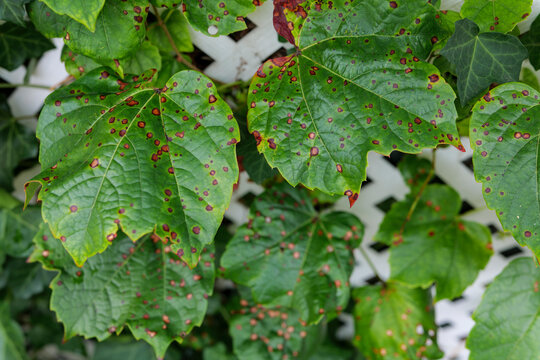

Late Blight (Potato & Tomato)
Caused by *Phytophthora infestans*, late blight results in dark lesions on leaves and stems, rapidly killing foliage. Fungicides and resistant varieties help manage the disease.

Wheat Rust
A fungal disease caused by *Puccinia* species. It appears as orange or brown pustules on leaves and stems, reducing yield and quality. Controlled by resistant varieties and timely fungicide application.

Powdery Mildew
White, powdery fungal growth appears on leaves and stems. Common in cucurbits and cereals. Controlled through sulfur sprays and good air circulation practices.

Rice Blast
Caused by *Magnaporthe oryzae*, it affects all parts of rice plants and can destroy entire fields. Managed with resistant cultivars and appropriate fungicides.

Bacterial Wilt (Solanaceous crops)
This soil-borne bacterial infection causes wilting and plant death. Control methods include crop rotation, resistant varieties, and soil solarization.

Downy Mildew
Appears as yellowish spots on the upper leaf surface and grey fungal growth below. Common in grapes, onions, and cucurbits. Managed with fungicides and resistant varieties.

Fusarium Wilt
A soil-borne fungal disease causing yellowing, wilting, and plant death. Effective control includes crop rotation and use of resistant cultivars.

Leaf Curl Virus
A viral disease spread by whiteflies, causing upward leaf curling and stunted growth. Managed through vector control and virus-resistant hybrids.

Anthracnose
Causes dark, sunken lesions on leaves, stems, and fruits. Common in mango, beans, and cucurbits. Prevented with clean seed, fungicides, and resistant varieties.
.jpg)
Clubroot (Crucifers)
Causes swollen, distorted roots leading to stunted plant growth. Managed by liming the soil to raise pH and crop rotation.

Black Sigatoka (Banana)
A leaf-spot disease reducing banana yield by up to 50%. Controlled by removing infected leaves and applying fungicides regularly.

Cercospora Leaf Spot
Causes circular spots on leaves, especially in sugar beet and soybeans. Managed by fungicide sprays and proper field hygiene.
.webp)
Tikka Disease (Groundnut)
Characterized by circular spots on leaves caused by fungal pathogens. Leads to defoliation and yield reduction. Controlled by fungicides and clean seed use.
.jpg)
Bacterial Leaf Blight (Rice)
Caused by *Xanthomonas oryzae*, it shows as yellowing of leaf margins followed by wilting. Managed using resistant varieties and seed treatment.

Sooty Mold
A black fungal growth that appears on leaves due to honeydew excreted by aphids or whiteflies. Controlled by managing the insect population.
.jpg)
Yellow Rust (Wheat)
Causes yellow pustules in stripes on leaves. Reduces grain yield and quality. Control via resistant varieties and early fungicide spraying.
.jpg)
Red Rot (Sugarcane)
A serious fungal disease turning cane tissues red. Managed using resistant cultivars and proper field sanitation.

Apple Scab
A fungal disease producing dark lesions on leaves and fruit. Affects quality and storage life. Controlled by fungicide sprays and orchard hygiene.
.jpg)
Black Rot (Cabbage)
Yellow V-shaped lesions appear on cabbage leaves, caused by bacteria. Managed through crop rotation and hot water seed treatment.
.jpg)
Early Blight (Tomato)
Dark concentric spots appear on lower leaves, gradually affecting the plant. Managed with fungicides and crop debris removal.
.png)
Smut (Maize and Sorghum)
Characterized by swollen galls filled with black spores. A fungal disease controlled via seed treatment and field hygiene.

Rice Tungro Virus
Viral disease spread by green leafhoppers. Causes stunted growth and yellow-orange discoloration. Prevented through resistant varieties and vector control.

Grape Downy Mildew
Yellow oily spots on leaves followed by fungal growth. Causes leaf drop and poor fruit set. Managed with copper-based fungicides.

Papaya Ring Spot Virus
Characterized by ring-shaped spots on leaves and fruits. Spread by aphids. Controlled through removal of infected plants and use of virus-free seedlings.